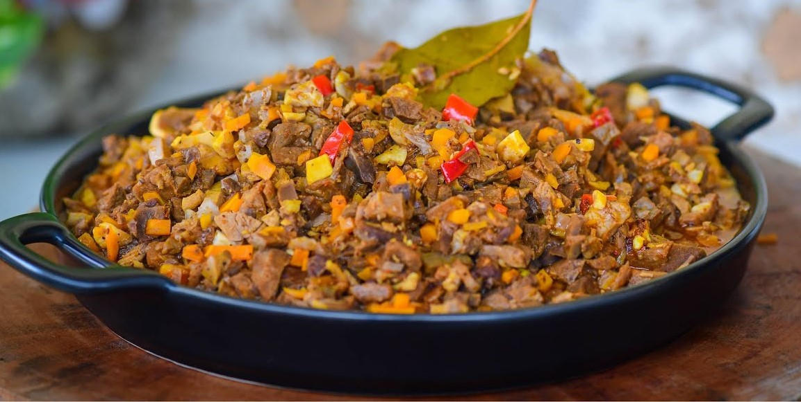

Bopis Recipe
What is Bopis?
Bopis is a spicy Filipino dish made from minced pigs lungs and heart. This can be served as an appetizer for beer and alcoholic beverages; it is also considered as a main dish and is best served with steamed white rice. The recipe of bopis has continually evolved throughout the years. There are recipes with a little bit of sauce in it, while there are others that require to let all the liquid evaporate. All of the recipes that I’ve tried are good.
Ingredients
3 lbs pork lungs
1 Knorr Pork Cube
5 dried bay leaves
2 carrots diced
3 thumbs ginger minced
1 tablespoon annatto powder
3 Thai chili pepper chopped
1 onion diced
5 cloves garlic minced
5 tablespoons vinegar
2 ½ cups water
¼ teaspoon ground black pepper
4 tablespoons cooking oil
Fish sauce to taste
Boiling Ingredients:
8 cups water
5 dried bay leaves
25 g sibot
Instructions / How to Cook
1. In a large pot, boil 8 cups of water and then add the rest of the boiling ingredients. Put the pig’s lungs into the pot and continue boiling for 1 hours. Remove the lungs, let it cool down, and then dice into small pieces. Set aside.
2. Heat oil on a clean pot. Sauté garlic, onion, and ginger.
3. Add the diced lungs once the onion softens. Cook for 3 minutes while stirring.
4. Add vinegar. Cook for 2 minutes.
5. Pour 2 ½ cups of water into the pot. Let it boil.
6. Add Knorr Pork cube and bay leaves. Stir. Cover the pot and adjust the heat between low to medium setting. Continue cooking until the liquid reduces to half.
7. Add the carrot, chili pepper, and annatto powder. Cook for 3 minutes.
8. Season with ground black pepper and fish sauce.
9. Transfer to a serving plate. Share and enjoy!